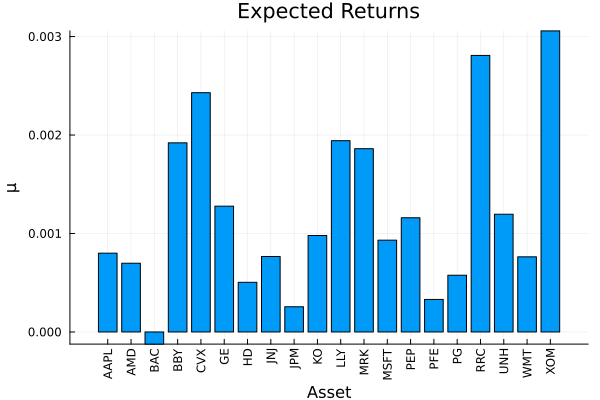
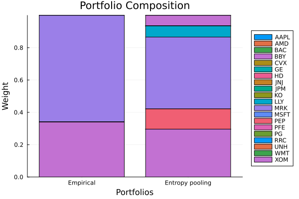

The source files can be found in examples/.
Entropy pooling
Black-Litterman adds views to the mean through a Gaussian update. Entropy pooling is more general in two ways. First, a view can constrain one of several statistics, such as the mean, the variance, the CVaR, the skewness or the kurtosis, and even a single covariance or correlation. Second, it assumes no normal distribution. It reweights the empirical scenarios so that the new distribution satisfies your views and stays as close as it can to the original one, in relative entropy, which is the Kullback-Leibler divergence. The result gives every scenario a new weight, so every moment of the prior can change.
This page is the second of three on priors built from views. Black-Litterman comes before it, and opinion pooling follows and combines several entropy pooling priors into one.
EntropyPoolingPrior takes the views on each quantity in its own field, and the names of the fields need care. mu_views holds views on the mean, and sigma_views views on the variance. The tail risk views are var_views for the value at risk, which is not the variance, cvar_views for the conditional value at risk, evar_views for the entropic value at risk and rlvar_views for the relativistic value at risk. sk_views and kt_views hold views on the skewness and the kurtosis, and cov_views and rho_views views on covariances and correlations. Each field holds string constraints over the names of a UniverseSets in a LinearConstraintEstimator, and section 5 shows the wrapper that the four tail risk fields put around it.
Reach for entropy pooling when your views say more than "the mean will be x". Examples are views on the volatility, on a tail risk such as the CVaR, on the skewness, or on the correlation between two assets, one or several at once. It also suits you when you do not trust the normal distribution that Black-Litterman assumes, because it reweights the empirical scenarios directly. For a view on the mean alone, Black-Litterman is simpler. To combine several entropy pooling priors, see opinion pooling.
using PortfolioOptimisers, PrettyTablesmmtfmt = (v, i, j) -> begin if j == 1 return v else return isa(v, Number) ? "$(round(v*100, digits=4)) %" : v endend;resfmt = (v, i, j) -> begin if j == 1 return v else return isa(v, Number) ? "$(round(v*100, digits=3)) %" : v endend;1. The data
We load one year of daily prices of 20 assets and convert them to returns. Entropy pooling gives each of these 252 days a new probability.
using CSV, TimeSeries, DataFramesX = TimeArray(CSV.File(joinpath(@__DIR__, "..", "SP500.csv.gz")); timestamp = :Date)[(end - 252):end]rd = prices_to_returns(X)ReturnsResult
nx ┼ 20-element Vector{String}
X ┼ 252×20 Matrix{Float64}
nf ┼ nothing
F ┼ nothing
nb ┼ nothing
B ┼ nothing
ts ┼ 252-element Vector{Date}
iv ┼ nothing
ivpa ┼ nothing
pnl ┼ AssetPanel
│ pf ┼ Vector{AbstractPanelField}: AbstractPanelField[]
│ amsk ┼ 252×20 AllTrueMask
│ emsk ┴ 252×20 AllTrueMask
2. Naming assets and groups
As with Black-Litterman, a view names assets and groups through a UniverseSets.
sets = UniverseSets(; dict = Dict("nx" => rd.nx, "tech" => ["AAPL", "AMD", "MSFT"], "energy" => ["CVX"]))UniverseSets
xkey ┼ String: "nx"
uxkey ┼ String: "ux"
tfkey ┼ String: "nf"
utfkey ┼ String: "uf"
cfkey ┼ String: "ncf"
ucfkey ┼ String: "ucf"
nikey ┼ String: "ni"
dict ┴ Dict{String, Vector{String}}: Dict("tech" => ["AAPL", "AMD", "MSFT"], "energy" => ["CVX"], "nx" => ["AAPL", "AMD", "BAC", "BBY", "CVX", "GE", "HD", "JNJ", "JPM", "KO", "LLY", "MRK", "MSFT", "PEP", "PFE", "PG", "RRC", "UNH", "WMT", "XOM"])
3. Views on several moments
Entropy pooling views are strings too, but each field reads a different quantity. We state three views. In mu_views, Apple returns 8 bps a day, and the three tech means added together are at least the energy mean. In entropy pooling a group stands for the sum of its members, not their average as in Black-Litterman. In sigma_views, Apple's variance takes a fixed value. The comparison operators a view accepts depend on the field. mu_views, sigma_views, sk_views, kt_views, cov_views, rho_views, cvar_views, evar_views and rlvar_views take ==, >= and <=, and var_views takes only == and >=. An operator that a field does not accept raises a ParseError, which lists the operators that the field allows.
mu_views = LinearConstraintEstimator(; val = ["AAPL == 0.0008", "tech >= energy"])sigma_views = LinearConstraintEstimator(; val = ["AAPL == 0.0003"])ep = EntropyPoolingPrior(; sets = sets, mu_views = mu_views, sigma_views = sigma_views)EntropyPoolingPrior
pe ┼ EmpiricalPrior
│ ce ┼ PortfolioOptimisersCovariance
│ │ ce ┼ Covariance
│ │ │ me ┼ SimpleExpectedReturns
│ │ │ │ w ┴ nothing
│ │ │ ce ┼ GeneralCovariance
│ │ │ │ ce ┼ SimpleCovariance: SimpleCovariance(true)
│ │ │ │ w ┴ nothing
│ │ │ alg ┼ FullMoment()
│ │ │ w ┴ nothing
│ │ mp ┼ MatrixProcessing
│ │ │ pdm ┼ Posdef
│ │ │ │ alg ┼ UnionAll: NearestCorrelationMatrix.Newton
│ │ │ │ kwargs ┴ @NamedTuple{}: NamedTuple()
│ │ │ dn ┼ nothing
│ │ │ dt ┼ nothing
│ │ │ alg ┼ nothing
│ │ │ order ┴ NTuple{4, Symbol}: (:pdm, :dn, :dt, :alg)
│ me ┼ SimpleExpectedReturns
│ │ w ┴ nothing
│ horizon ┼ nothing
│ fill_limit ┴ nothing
mu_views ┼ LinearConstraintEstimator
│ val ┼ Vector{String}: ["AAPL == 0.0008", "tech >= energy"]
│ key ┴ nothing
var_views ┼ nothing
cvar_views ┼ nothing
evar_views ┼ nothing
rlvar_views ┼ nothing
sigma_views ┼ LinearConstraintEstimator
│ val ┼ Vector{String}: ["AAPL == 0.0003"]
│ key ┴ nothing
sk_views ┼ nothing
kt_views ┼ nothing
cov_views ┼ nothing
rho_views ┼ nothing
sets ┼ UniverseSets
│ xkey ┼ String: "nx"
│ uxkey ┼ String: "ux"
│ tfkey ┼ String: "nf"
│ utfkey ┼ String: "uf"
│ cfkey ┼ String: "ncf"
│ ucfkey ┼ String: "ucf"
│ nikey ┼ String: "ni"
│ dict ┴ Dict{String, Vector{String}}: Dict("tech" => ["AAPL", "AMD", "MSFT"], "energy" => ["CVX"], "nx" => ["AAPL", "AMD", "BAC", "BBY", "CVX", "GE", "HD", "JNJ", "JPM", "KO", "LLY", "MRK", "MSFT", "PEP", "PFE", "PG", "RRC", "UNH", "WMT", "XOM"])
opt ┼ OptimEntropyPooling
│ args ┼ Tuple{}: ()
│ kwargs ┼ @NamedTuple{}: NamedTuple()
│ sc1 ┼ Int64: 1
│ sc2 ┼ Float64: 1000.0
│ alg ┼ ExpEntropyPooling()
│ err ┴ nothing
w ┼ nothing
alg ┴ H1_EntropyPooling()
4. The prior and the reweighted posterior
We compute the entropy pooling posterior, and compare Apple's mean and variance under it with those of the plain empirical prior. Entropy pooling imposes each view as a constraint, so you can check each posterior value in the table against the value its view states.
pr_ep = prior(ep, rd)pr_emp = prior(EmpiricalPrior(), rd)i_aapl = findfirst(==("AAPL"), rd.nx)pretty_table(DataFrame(["moment" => ["mean (AAPL)", "variance (AAPL)"], "Empirical" => [pr_emp.mu[i_aapl], pr_emp.sigma[i_aapl, i_aapl]], "Entropy pooling" => [pr_ep.mu[i_aapl], pr_ep.sigma[i_aapl, i_aapl]]]); formatters = [mmtfmt], title = "Apple moments: empirical vs entropy-pooling view")Apple moments: empirical vs entropy-pooling view
┌─────────────────┬───────────┬─────────────────┐
│ moment │ Empirical │ Entropy pooling │
│ String │ Float64 │ Float64 │
├─────────────────┼───────────┼─────────────────┤
│ mean (AAPL) │ -0.1126 % │ 0.08 % │
│ variance (AAPL) │ 0.05 % │ 0.0301 % │
└─────────────────┴───────────┴─────────────────┘The views on Apple and on the tech group move the other assets too, because the reweighting changes the probability of every scenario. The second table compares the expected returns of every asset.
pretty_table(DataFrame(["Assets" => rd.nx, "Empirical" => pr_emp.mu, "Entropy pooling" => pr_ep.mu]); formatters = [mmtfmt], title = "Expected returns: empirical vs entropy-pooling posterior")Expected returns: empirical vs entropy-pooling posterior
┌────────┬───────────┬─────────────────┐
│ Assets │ Empirical │ Entropy pooling │
│ String │ Float64 │ Float64 │
├────────┼───────────┼─────────────────┤
│ AAPL │ -0.1126 % │ 0.08 % │
│ AMD │ -0.2809 % │ 0.0698 % │
│ BAC │ -0.0934 % │ -0.0124 % │
│ BBY │ -0.0279 % │ 0.1921 % │
│ CVX │ 0.1945 % │ 0.243 % │
│ GE │ -0.0339 % │ 0.1278 % │
│ HD │ -0.0707 % │ 0.0504 % │
│ JNJ │ 0.0307 % │ 0.0766 % │
│ JPM │ -0.0417 % │ 0.0256 % │
│ KO │ 0.0497 % │ 0.098 % │
│ LLY │ 0.1305 % │ 0.1942 % │
│ MRK │ 0.1669 % │ 0.1861 % │
│ MSFT │ -0.1206 % │ 0.0932 % │
│ PEP │ 0.039 % │ 0.1159 % │
│ PFE │ -0.0256 % │ 0.033 % │
│ PG │ -0.0081 % │ 0.0576 % │
│ RRC │ 0.1824 % │ 0.2808 % │
│ UNH │ 0.0364 % │ 0.1196 % │
│ WMT │ 0.0163 % │ 0.0763 % │
│ XOM │ 0.2637 % │ 0.3058 % │
└────────┴───────────┴─────────────────┘The expected returns of the entropy pooling posterior.
using StatsPlots, GraphRecipesplot_mu(pr_ep, rd.nx)
5. Views on tail risk
A significance level belongs to the view and not to the estimator, because the CVaR at 1% and the CVaR at 10% are different statistics of the same series. var_views, cvar_views, evar_views and rlvar_views therefore take a ValueatRiskView, a ConditionalValueatRiskView, an EntropicValueatRiskView and a RelativisticValueatRiskView respectively. Each pairs a group of view equations with the alpha at which to read them, and a field also takes a vector of them for views at several levels. A prior(...) term inside a group reads the prior's statistic at the alpha of that group, and at its kappa where the measure has one.
The relativistic value at risk, RLVaR, generalises the entropic value at risk with a deformation parameter $\kappa$, and a RelativisticValueatRiskView holds kappa next to alpha. The RLVaR tends to the EVaR as kappa approaches zero, and rises toward the worst loss of the sample as kappa approaches one.
A VaR view is linear in the posterior probabilities, so ValueatRiskView has no alg and needs no solver. A CVaR, EVaR or RLVaR view is not linear in them. It needs auxiliary variables, and therefore a JuMPEntropyPooling in opt. One case is an exception. A lower bound on the EVaR or RLVaR of one asset, with GridEntropicValueatRiskView or GridRelativisticValueatRiskView set in alg, becomes a set of linear rows, and the default OptimEntropyPooling solves it.
The alg field of a tail view group sets how the model writes each view. Left at nothing, a lower bound, or an equality at or above the prior value, takes LinearConditionalValueatRiskView, ConicEntropicValueatRiskView or ConicRelativisticValueatRiskView, each of which states the view exactly. An upper bound, or an equality below the prior value, on one asset takes IntegerConditionalValueatRiskView, GridEntropicValueatRiskView or GridRelativisticValueatRiskView. These need a mixed-integer conic solver, and the two grid forms state the view only at the points of their grid.
A view over several assets whose coefficients all have one sign, such as a group, is a sum of the measures of its assets with positive weights, and a lower bound on it takes the same exact formulations. A relative view has coefficients of both signs. A relative CVaR view takes the integer formulation, and so does a CVaR upper bound on a group, or a CVaR equality below the prior value of a group. A grid covers one asset, so on the EVaR and the RLVaR these views take SequentialEntropicValueatRiskView or SequentialRelativisticValueatRiskView, which solve a convex program a few times and need no integer variable. SequentialConditionalValueatRiskView gives the CVaR the same option.
For an EntropicValueatRiskView or a RelativisticValueatRiskView, a grid formulation in alg sets how the library builds the grid: its width pct, its number of points K, and a multiplier M of its big-M constants. A big-M constant is a number large enough that adding it to a row of the grid makes the row hold at any posterior, so that a binary variable can switch the row off. The library builds the grid itself from the data when it computes the prior.
No reweighting of the sample can push a tail measure past the worst loss of the sample, so a lower-bound view has room only between the prior value and that loss. At kappa = 0.3 the RLVaR is already close to the worst loss, and the CVaR of the same asset is not.
Every field that takes a Solver also takes a vector of them, and the library tries them in order until one solves the problem. Near the worst loss the second solver matters. With one configuration alone, the solver stops short when it computes the RLVaR of the posterior that the <= view below gives, and it reports the failure. A second configuration with a shorter step solves it.
using Clarabel, HiGHS, Pajarito, JuMPslv = [Solver(; name = :clarabel1, solver = Clarabel.Optimizer, settings = Dict("verbose" => false), check_sol = (; allow_local = true, allow_almost = true)), Solver(; name = :clarabel2, solver = Clarabel.Optimizer, settings = Dict("verbose" => false, "max_step_fraction" => 0.85), check_sol = (; allow_local = true, allow_almost = true))]x_aapl = rd.X[:, i_aapl]rlvar_of = w -> RelativisticValueatRisk(; alpha = 0.05, kappa = 0.3, slv = slv, w = w)(x_aapl)prior_cvar = ConditionalValueatRisk(; alpha = 0.05)(x_aapl)prior_evar = EntropicValueatRisk(; alpha = 0.05, slv = slv)(x_aapl)prior_rlvar = RelativisticValueatRisk(; alpha = 0.05, kappa = 0.3, slv = slv)(x_aapl)worst_loss = maximum(-x_aapl)pretty_table(DataFrame(["Statistic" => ["CVaR", "EVaR", "RLVaR, kappa = 0.3", "worst loss"], "AAPL, prior" => [prior_cvar, prior_evar, prior_rlvar, worst_loss]]); formatters = [mmtfmt], title = "How much room a lower-bound tail view has")How much room a lower-bound tail view has
┌────────────────────┬─────────────┐
│ Statistic │ AAPL, prior │
│ String │ Float64 │
├────────────────────┼─────────────┤
│ CVaR │ 4.5734 % │
│ EVaR │ 5.0997 % │
│ RLVaR, kappa = 0.3 │ 5.3581 % │
│ worst loss │ 5.8684 % │
└────────────────────┴─────────────┘The view "AAPL >= 1.25*prior(AAPL)" is an ordinary request on cvar_views. On rlvar_views it asks for more than the worst loss in the table. A lower bound on this statistic has room for a multiple of the prior RLVaR up to the ratio of the worst loss to the prior RLVaR, about 1.1. We state that view on rlvar_views and print the message of the error that prior throws.
try prior(EntropyPoolingPrior(; sets = sets, opt = JuMPEntropyPooling(; slv = slv), rlvar_views = RelativisticValueatRiskView(; views = LinearConstraintEstimator(; val = "AAPL >= 1.25*prior(AAPL)"))), rd)catch e println(e.msg)endView `1.0*AAPL >= 0.06697668647244745` is too extreme: the largest RLVaR any reweighting of this sample reaches is the worst realisation of its left hand side, 0.05868359908043696. Lower the view, raise alpha, or use a prior with fatter tails.A target below the prior needs the other formulation. ConicRelativisticValueatRiskView bounds the RLVaR from below only, so a <= view takes GridRelativisticValueatRiskView instead. The grid picks one of its points with a binary vector, so it needs a solver for mixed-integer conic programs. Pajarito is one such solver, and here it uses HiGHS for the outer approximation and Clarabel for the cones. SequentialRelativisticValueatRiskView is the other way to state a <= view. It bounds the RLVaR from above with a constraint that is linear in the posterior probabilities. It computes that constraint again at each new posterior and solves again until the bound is tight, so it needs no integer variable.
mip_slv = Solver(; name = :pajarito1, solver = optimizer_with_attributes(Pajarito.Optimizer, "verbose" => false, "oa_solver" => optimizer_with_attributes(HiGHS.Optimizer, JuMP.MOI.Silent() => true), "conic_solver" => optimizer_with_attributes(Clarabel.Optimizer, "verbose" => false)), check_sol = (; allow_local = true, allow_almost = true))lo_view = RelativisticValueatRiskView(; views = LinearConstraintEstimator(; val = "AAPL >= 1.05*prior(AAPL)"))hi_view = RelativisticValueatRiskView(; views = LinearConstraintEstimator(; val = "AAPL <= 0.95*prior(AAPL)"))pr_lo = prior(EntropyPoolingPrior(; sets = sets, opt = JuMPEntropyPooling(; slv = slv), rlvar_views = lo_view), rd)pr_hi = prior(EntropyPoolingPrior(; sets = sets, opt = JuMPEntropyPooling(; slv = mip_slv), rlvar_views = hi_view), rd)LowOrderPrior
X ┼ 252×20 Matrix{Float64}
o_X ┼ nothing
mu ┼ 20-element Vector{Float64}
sigma ┼ 20×20 Matrix{Float64}
chol ┼ nothing
w ┼ 252-element ProbabilityWeights{Float64, Float64, Vector{Float64}}
ens ┼ Float64: 251.28179040533644
kld ┼ Float64: 0.0028541071657878295
ow ┼ nothing
rr ┼ nothing
fpr ┴ nothing
The table prints Apple's RLVaR under the empirical prior and under each posterior, so you can compare each value with 1.05 and 0.95 times the prior value. The divergence column measures how far each view moved the distribution away from the prior. The <= view moves it less, because it is easier to take 5% off a statistic that is close to the worst loss than to add 5% to it.
kldfmt = (v, i, j) -> begin if j == 1 return v elseif j == 2 return "$(round(v * 100, digits = 4)) %" else return isa(v, Number) ? string(round(v; sigdigits = 4)) : v endend;pretty_table(DataFrame(["Prior" => ["empirical", "RLVaR >= 1.05 prior, conic", "RLVaR <= 0.95 prior, grid"], "AAPL RLVaR" => [prior_rlvar, rlvar_of(pr_lo.w), rlvar_of(pr_hi.w)], "Divergence" => ["", pr_lo.kld, pr_hi.kld]]); formatters = [kldfmt], title = "Each RLVaR view lands on its target") Each RLVaR view lands on its target
┌────────────────────────────┬────────────┬────────────┐
│ Prior │ AAPL RLVaR │ Divergence │
│ String │ Float64 │ Any │
├────────────────────────────┼────────────┼────────────┤
│ empirical │ 5.3581 % │ │
│ RLVaR >= 1.05 prior, conic │ 5.626 % │ 0.007359 │
│ RLVaR <= 0.95 prior, grid │ 5.0902 % │ 0.002854 │
└────────────────────────────┴────────────┴────────────┘ConicRelativisticValueatRiskView adds $2T$ power cones to the model, where $T$ is the number of observations. A longer sample, a smaller alpha, a smaller kappa, or two such views in one model can make a conic solver stop short of a solution. Give the slv field of opt a vector of solver configurations, shorten the sample, or state the view with GridRelativisticValueatRiskView. Its lower-bound constraints are linear in the posterior probabilities, and it adds no cone.
6. Views change the portfolio
We give the reweighted prior to a maximum-ratio optimiser. As with Black-Litterman, the portfolio moves weight toward the assets that the views favour. The difference is that here the views changed the whole distribution.
rf = 4.2 / 100 / 252res_emp = optimise(MeanRisk(; obj = MaximumRatio(; rf = rf), opt = JuMPOptimiser(; pe = pr_emp, slv = slv)))res_ep = optimise(MeanRisk(; obj = MaximumRatio(; rf = rf), opt = JuMPOptimiser(; pe = pr_ep, slv = slv)))pretty_table(DataFrame(["Assets" => rd.nx, "Empirical" => res_emp.w, "Entropy pooling" => res_ep.w]); formatters = [resfmt], title = "Maximum-ratio weights: empirical vs entropy pooling")Maximum-ratio weights: empirical vs entropy pooling
┌────────┬───────────┬─────────────────┐
│ Assets │ Empirical │ Entropy pooling │
│ String │ Float64 │ Float64 │
├────────┼───────────┼─────────────────┤
│ AAPL │ 0.0 % │ 0.0 % │
│ AMD │ 0.0 % │ 0.0 % │
│ BAC │ 0.0 % │ 0.0 % │
│ BBY │ 0.0 % │ 6.52 % │
│ CVX │ 0.0 % │ 0.0 % │
│ GE │ 0.0 % │ 0.0 % │
│ HD │ 0.0 % │ 0.0 % │
│ JNJ │ 0.0 % │ 0.0 % │
│ JPM │ 0.0 % │ 0.0 % │
│ KO │ 0.0 % │ 0.0 % │
│ LLY │ 0.002 % │ 6.913 % │
│ MRK │ 65.977 % │ 44.433 % │
│ MSFT │ 0.0 % │ 0.0 % │
│ PEP │ 0.0 % │ 12.545 % │
│ PFE │ 0.0 % │ 0.0 % │
│ PG │ 0.0 % │ 0.0 % │
│ RRC │ 0.0 % │ 0.0 % │
│ UNH │ 0.0 % │ 0.0 % │
│ WMT │ 0.0 % │ 0.0 % │
│ XOM │ 34.02 % │ 29.59 % │
└────────┴───────────┴─────────────────┘Each bar of the plot stacks the weights of one portfolio. Look at Apple and at the tech stocks in the two bars.
plot_stacked_bar_composition([res_emp, res_ep], rd; xticks = (1:2, ["Empirical", "Entropy pooling"]))
This page was generated using Literate.jl.